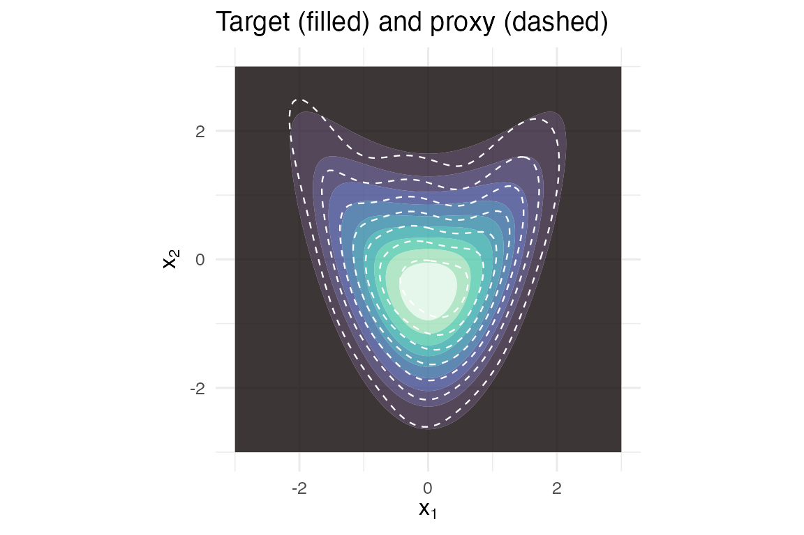

has_ggplot2 <- requireNamespace("ggplot2", quietly = TRUE)The problem
A statistical distribution, such as the normal, comes with two tools.
One is a formula for how likely each value is, which for the normal is
the bell curve. The other is a way to generate random values, such as
rnorm(). With both, you can simulate data, work out means
and probabilities, and draw the distribution.
In research, often only the first tool is available. A Bayesian analysis, for example, ends with a formula that says how plausible each combination of parameter values is, but gives no direct way to draw from it. You can use the formula to work out how likely any single point is, but it will not give you a random sample, a mean, or the probability of a range of values.
proxymix builds a stand-in, or proxy, for such a distribution. The proxy is a mixture of a few normal distributions added together, known as a Gaussian mixture. Normal distributions are easy to work with, so the proxy is too: you can draw from it, average over it, and fix one variable at a value to see how the others behave. The package also reports how close the proxy is to the original, so you know whether to trust it.
This vignette works through one example from start to finish.
Package capabilities
-
gmm_target()describes the distribution you want to approximate, called the target. You supply the number of variables and a function that returns the log of the density. Logs are used because density values can be extremely small.banana_target()is a ready-made target in two variables, shaped like a curved banana. -
fit_proxymix()fits the proxy. It chooses one of three fitting methods from what you supply. -
proposal_mvt()sets up a wide distribution that is easy to sample, from which the fitting method draws its trial points. -
gmm_fit_quality()returns a short report on the quality of the fit, called its certificate. -
dgmm(),rgmm(),gmm_marginalise()andgmm_conditionalise()use the fitted proxy. They give density values, random draws, the distribution of one variable on its own, and the distribution of one variable when another is held at a fixed value.
Addressing the problem
Which fitting method applies
The package has three ways of fitting the bell curves, described by
van der Hoek and Elliott (2024). fit_proxymix() picks one
according to what you supply.
| What you have | What the package does |
regime setting |
|---|---|---|
| Data, and you want one bell curve | Fits one bell curve with the same centre and spread as the data | "moment" |
| Data, and you want several bell curves | Moves and reshapes the bell curves, step by step, until together they match the data | "sample" |
| Only the formula, no data | Draws trial points, weights each one by the formula, then fits the bell curves to the weighted points | "kld" |
If you already have a sample from the target, the first two methods
apply, and established packages such as mclust,
mixtools and flexmix can also fit the mixture.
When you have only the formula, the third method applies. The package
was built for this case.
A target with no sampler
The banana target has an exact density formula and no sample, so only the third method applies.
tgt <- banana_target()
tgt
#> <gmm_target>: "banana" in p = 2 dimensions
#> log_density : supplied
#> samples : <absent>
#> normalised : TRUE
#> log Z(f) : 0Fit the proxy
The third method draws 2,000 trial points from a broad distribution that is easy to sample. Here it is a Student-t distribution, a relative of the normal with heavier tails, made wide enough to cover the banana. Each trial point is then weighted by how much more likely it is under the target than under the broad distribution. The weights do the same job as survey weights that correct an unrepresentative sample. The mixture is refitted to the weighted points in rounds, which stop when the fit no longer improves.
The closeness of the proxy to the target is measured by the Kullback-Leibler (KL) divergence. It is zero when the two distributions match and increases as they become more different.
The call below asks for a proxy with three components and sets a seed so the result is reproducible.
proposal <- proposal_mvt(n_dim = 2L, mean = c(0, 0),
sigma = 4 * diag(2), df = 5)
fit <- fit_proxymix(tgt, N = 3L, regime = "kld",
proposal = proposal,
is_size = 2000L,
max_iter = 60L,
seed = 1L)
fit
#> <gmm_fit>: regime = "kld", K = 3, p = 2
#> target : banana
#> iterations : 38
#> converged : TRUE
#> [1] w = 0.5345, |mu| = 0.3018, tr(Sigma) = 1.3502
#> [2] w = 0.3173, |mu| = 0.9255, tr(Sigma) = 2.0300
#> [3] w = 0.1483, |mu| = 1.5183, tr(Sigma) = 3.1396Check the fit before using it
Weighted draws have a weakness familiar from survey work. If a
handful of respondents carry very large weights, the survey estimate
rests on those few people and becomes unstable. The same happens here if
a few trial points carry most of the weight.
gmm_fit_quality() checks for this and for other signs of a
poor fit.
quality <- gmm_fit_quality(fit)| Check | Value |
|---|---|
| fitting method | kld |
| rounds settled before the limit | TRUE |
| weights collapsed onto a few draws | FALSE |
| effective sample size | 820.6 |
| effective sample size as a share of all draws | 0.410 |
| smallest effective sample size of any component | 347.7 |
| largest share of the weight held by one draw | 0.00206 |
| KL divergence on the fitting draws | 0.00275 |
| half the variance of the log density ratio (a local KL approximation) | 0.0163 |
| KL divergence on fresh draws | 0.0126 |
| fresh draws minus fitting draws | 0.00983 |
The effective sample size is the number of equally weighted draws that the weighted sample is worth. The fit was tuned to the draws it was fitted on, so the KL computed on them is too low. The KL on a fresh set of draws is the one to report. The package flags a fit when this KL exceeds 0.3, when the fit did not converge, or when it is degenerate. Half the variance of the log density ratio on the fitting draws approximates the KL when the proxy is already close to the target. It is only a rough check.
Compare the proxy with the target
With two variables, the quickest check is a plot.
grid_x <- seq(-3, 3, length.out = 120L)
grid_g <- expand.grid(x1 = grid_x, x2 = grid_x)
grid_mat <- as.matrix(grid_g)
grid_g$target <- exp(tgt@log_density(grid_mat))
grid_g$proxy <- dgmm(grid_mat, fit)
ggplot2::ggplot(grid_g, ggplot2::aes(x1, x2)) +
ggplot2::geom_contour_filled(ggplot2::aes(z = target), bins = 10L,
alpha = 0.85) +
ggplot2::geom_contour(ggplot2::aes(z = proxy), colour = "white",
linetype = "dashed", linewidth = 0.45, bins = 8L) +
ggplot2::scale_fill_viridis_d(option = "mako", guide = "none") +
ggplot2::coord_equal() +
ggplot2::labs(
title = "Target (filled) and fitted proxy (dashed)",
x = expression(x[1]), y = expression(x[2])
) +
ggplot2::theme_minimal(base_size = 11)
The banana target (filled contours) with the three-component proxy overlaid as dashed contours. The dashed contours follow the curve of the banana, which a single bell curve could not do. The KL divergence on fresh draws is 0.013.
Use the proxy
Questions that were hard to answer for the target have exact answers
for the proxy, because it is built from normal distributions.
gmm_marginalise(keep = 1L) gives the distribution of the
first variable on its own.
gmm_conditionalise(given = c(NA, 0.5)) gives the
distribution of the first variable when the second equals 0.5, with
NA marking the variable left free. Neither call goes back
to the target formula.
gmm_marginalise(fit, keep = 1L)
#> <marginalise(kld_em[N=3] on banana)>: K = 3 components in p = 1 dimensions
#> [1] w = 0.5345, |mu| = 0.1866, tr(Sigma) = 0.4417
#> [2] w = 0.3173, |mu| = 0.9236, tr(Sigma) = 0.4325
#> [3] w = 0.1483, |mu| = 1.3524, tr(Sigma) = 0.5179
gmm_conditionalise(fit, given = c(NA, 0.5))
#> <conditionalise(kld_em[N=3] on banana)>: K = 3 components in p = 1 dimensions
#> [1] w = 0.5597, |mu| = 0.2553, tr(Sigma) = 0.4338
#> [2] w = 0.3179, |mu| = 1.0803, tr(Sigma) = 0.2310
#> [3] w = 0.1224, |mu| = 1.2816, tr(Sigma) = 0.1535Drawing from the proxy is fast.
Comparison with the Laplace approximation, Stan and BayesianTools
In a simulation, proxymix was compared with three established methods
for a distribution that is known only by its formula. The Laplace
approximation (Tierney and Kadane, 1986) is a single normal distribution
centred on the highest point of the target, with a spread set by how
sharply the target falls away from that point. Stan (Carpenter et al.,
2017), run from R through cmdstanr, draws a sample from the
formula with the no-U-turn sampler, or NUTS (Hoffman and Gelman, 2014).
NUTS is a Markov chain Monte Carlo method: it produces random values by
a long chain of small, linked steps. A mixture was then fitted to the
NUTS draws with mclust (Scrucca et al., 2016). DEzs (ter
Braak and Vrugt, 2008), from BayesianTools (Hartig et al.,
2026), is another Markov chain Monte Carlo method. Each method was run
200 times on the banana target without further tuning. proxymix chose
its number of components automatically with select_N(), and
mclust chose its own from 1 to 6. Only this one target in
two variables was used, and the results may not carry over to targets
with more variables. The first measure is the KL divergence of each
fitted density from the target, computed by summing over a fine grid of
points. It cannot be computed for the two samplers, which return draws
but no density. The second measure is the error in the estimated
probability that
is greater than 2, which is 0.0227 for the target. Smaller is better for
both.
| Method | KL divergence, mean (sd) | Error in | Seconds per run |
|---|---|---|---|
| proxymix | 0.0081 (0.0031) | 0.00350 | 0.70 |
| NUTS draws, then mclust | 0.0139 (0.0046) | 0.00473 | 2.70 |
| Laplace approximation | 0.3749 (0.0000) | 0.00001 | < 0.01 |
| NUTS draws | – | 0.00460 | 1.04 |
| DEzs draws | – | 0.00546 | 0.53 |
proxymix gave the smallest KL divergence, 0.0081 against 0.0139 for the mixture fitted to the NUTS draws. The Laplace approximation was far behind on this measure, at 0.3749, because one bell curve cannot follow the curve of the banana. On the tail probability, however, the Laplace approximation was the most accurate, with an error of 0.00001. On its own, has a standard normal distribution, and on this target the Laplace approximation reproduces it almost exactly. proxymix came second on the tail, with an error of 0.0035 against 0.0046 to 0.0055 for the two samplers and the mixture fitted to the NUTS draws. The held-out KL of 0.0126 reported for the three-component fit above is itself estimated from random draws, with a standard error of about 0.0014. On the grid used for the table, that fit has a KL divergence of 0.0154. That value lies 2.4 standard deviations above the proxymix mean in the table, using the standard deviation across runs shown there in brackets.
The Laplace approximation was also the fastest, at under 0.01 seconds
per run. DEzs took 0.53 seconds per run and was slightly faster than
proxymix at 0.70, while NUTS took 1.04 and NUTS followed by
mclust took 2.70 (medians on one computer, with other
programs running on it at the same time).
The code below runs each method once and scores it against the grid.
It needs mclust and BayesianTools from CRAN,
and cmdstanr from https://stan-dev.r-universe.dev with a CmdStan
installation. It is not run when this vignette is built.
library(proxymix)
library(cmdstanr)
library(mclust)
library(BayesianTools)
tgt <- banana_target()
# midpoint-rule quadrature; the target's mass outside the box is below 1e-5
h <- 0.05
grid <- as.matrix(expand.grid(x1 = seq(-5 + h / 2, 5, by = h),
x2 = seq(-5 + h / 2, 12, by = h)))
log_f <- tgt@log_density(grid)
f_grid <- exp(log_f)
tail_ref <- sum(f_grid[grid[, 1L] > 2]) * h^2
kl_of <- function(log_g) sum(f_grid * (log_f - log_g)) * h^2
# mass above x1 = 2 under a Gaussian mixture, from its x1 marginal
tail_of <- function(w, mean1, sd1) {
sum(w * pnorm(2, mean1, sd1, lower.tail = FALSE))
}
# the same target as a Stan program
stan_file <- file.path(tempdir(), "banana.stan")
writeLines(c(
"parameters {",
" vector[2] x;",
"}",
"model {",
" target += -0.5 * (square(x[1])",
" + square(x[2] - 0.5 * (square(x[1]) - 1)));",
"}"), stan_file)
banana_stan <- cmdstan_model(stan_file)
box <- createBayesianSetup(likelihood = function(x) tgt@log_density(x),
lower = c(-6, -6), upper = c(6, 14))
set.seed(1L)
fit <- select_N(tgt, seed = 1L)$best_fit
fit_1 <- gmm_marginalise(fit, keep = 1L)
la <- optim(c(0, 0), function(x) -tgt@log_density(x),
method = "BFGS", hessian = TRUE)
la_mean <- la$par
la_cov <- solve(la$hessian)
nuts <- banana_stan$sample(seed = 1L, refresh = 0L, show_messages = FALSE)
draws <- nuts$draws("x", format = "matrix")
mc <- Mclust(draws, G = 1:6, modelNames = "VVV", verbose = FALSE)
mc_par <- mc$parameters
de <- runMCMC(box, sampler = "DEzs", settings = list(message = FALSE))
de_draws <- getSample(de, start = 1000L)
# KL divergence from the target, for the methods that return a density
c(proxymix = kl_of(dgmm(grid, fit, log = TRUE)),
Laplace = kl_of(dmvnorm(grid, la_mean, la_cov, log = TRUE)),
"NUTS + mclust" = kl_of(dens(grid, mc$modelName, parameters = mc_par,
logarithm = TRUE)))
# error in the estimated probability that x1 > 2
c(proxymix = tail_of(gmm_weights(fit_1),
vapply(gmm_means(fit_1), `[[`, numeric(1L), 1L),
sqrt(vapply(gmm_covariances(fit_1), `[[`,
numeric(1L), 1L))),
Laplace = pnorm(2, la_mean[1L], sqrt(la_cov[1L, 1L]), lower.tail = FALSE),
NUTS = mean(draws[, 1L] > 2),
"NUTS + mclust" = tail_of(mc_par$pro, mc_par$mean[1L, ],
sqrt(mc_par$variance$sigma[1L, 1L, ])),
DEzs = mean(de_draws[, 1L] > 2)) - tail_refThe extended version of this article gives the full simulation, including how many settings each method needs the user to choose.
Interpretation
The proxy is a mixture of 3 normal distributions in 2 variables, fitted in 38 rounds. It can be sampled and summarised without calling the target formula again. The figure shows why a mixture is needed: one bell curve cannot follow a curved shape, but three placed along the curve can.
The certificate is consistent with a good fit. The rounds settled before the limit of 60, and the weights did not collapse. The 2,000 weighted draws were worth 821 equally weighted draws, 41 per cent of the total. The heaviest single draw held 0.2 per cent of the total weight, so no single draw dominated the fit. Each component was estimated from an effective sample of at least 348 draws.
The KL divergence on fresh draws is 0.013, with a standard error of 0.0014. For a sense of scale, this value means that the probabilities the proxy and the target give to any region differ by at most , about 8 percentage points (Pinsker’s inequality). The KL divergence computed on the grid, 0.0154, lies above the fresh-draw estimate by 2.0 times the standard error of that estimate. The KL on the fitting draws is lower because the fit was tuned to those draws. The difference between the two, 0.0098, is about 3 times the standard error of the KL on the fitting draws, which is 0.0036.
Limitations
The number of components is set to three by hand here.
select_N() chooses it automatically, and
bic_aic() reports the BIC and AIC for comparing counts. Too
few components show up as a KL divergence that more trial draws do not
reduce.
The choice of broad distribution matters. The Student-t used here is wide enough to cover the banana. If the broad distribution misses part of the target, the proxy misses that part too, even though the printed mixture may look reasonable.
This example has two variables. Weighted trial draws lose efficiency quickly as the number of variables grows, so a proxy of the same quality in five or ten variables needs many more draws. The effective sample size in the certificate shows when this happens.
Further reading
Choosing between the three fitting regimes runs all three fitting methods on a target whose true shape is known, so the cost of the wrong choice is visible.
How well a mixture proxies four awkward shapes applies the third method to a curved ridge, a ring, two well-separated clusters and a distribution with hard edges, and shows the package refusing a fit whose weights have collapsed.
The closed-form operator calculus on a mixture goes further with the exact operations shown above.
Compressing a Bayesian posterior you can evaluate but not sample applies this workflow to the result of a Bayesian analysis.
References
Carpenter, B., Gelman, A., Hoffman, M. D., Lee, D., Goodrich, B., Betancourt, M., Brubaker, M., Guo, J., Li, P. and Riddell, A. (2017). Stan: A probabilistic programming language. Journal of Statistical Software 76(1), 1–32. https://doi.org/10.18637/jss.v076.i01.
Hartig, F., Minunno, F. and Paul, S. (2026). BayesianTools: General-purpose MCMC and SMC samplers and tools for Bayesian statistics. R package version 0.1.9. https://doi.org/10.32614/CRAN.package.BayesianTools.
Hoek, J. van der and Elliott, R. J. (2024). Mixtures of multivariate Gaussians. Stochastic Analysis and Applications. https://doi.org/10.1080/07362994.2024.2372605.
Hoffman, M. D. and Gelman, A. (2014). The No-U-Turn sampler: Adaptively setting path lengths in Hamiltonian Monte Carlo. Journal of Machine Learning Research 15(47), 1593–1623. https://jmlr.org/papers/v15/hoffman14a.html.
Scrucca, L., Fop, M., Murphy, T. B. and Raftery, A. E. (2016). mclust 5: Clustering, classification and density estimation using Gaussian finite mixture models. The R Journal 8(1), 289–317. https://doi.org/10.32614/RJ-2016-021.
ter Braak, C. J. F. and Vrugt, J. A. (2008). Differential evolution Markov chain with snooker updater and fewer chains. Statistics and Computing 18(4), 435–446. https://doi.org/10.1007/s11222-008-9104-9.
Tierney, L. and Kadane, J. B. (1986). Accurate approximations for posterior moments and marginal densities. Journal of the American Statistical Association 81(393), 82–86. https://doi.org/10.1080/01621459.1986.10478240.
Reproduce
Every fit is seeded (seed = 1L), so re-running this
vignette reproduces the same numbers.
#> R version 4.6.1 (2026-06-24)
#> Platform: aarch64-apple-darwin23
#> Running under: macOS Tahoe 26.6.2
#>
#> Matrix products: default
#> BLAS: /Library/Frameworks/R.framework/Versions/4.6/Resources/lib/libRblas.0.dylib
#> LAPACK: /Library/Frameworks/R.framework/Versions/4.6/Resources/lib/libRlapack.dylib; LAPACK version 3.12.1
#>
#> locale:
#> [1] en_AU.UTF-8/en_AU.UTF-8/en_AU.UTF-8/C/en_AU.UTF-8/en_AU.UTF-8
#>
#> time zone: Australia/Adelaide
#> tzcode source: internal
#>
#> attached base packages:
#> [1] stats graphics grDevices utils datasets methods base
#>
#> other attached packages:
#> [1] proxymix_0.16.0
#>
#> loaded via a namespace (and not attached):
#> [1] mvnfast_0.2.8 gtable_0.3.6 jsonlite_2.0.0 dplyr_1.2.1
#> [5] compiler_4.6.1 Rcpp_1.1.2 tidyselect_1.2.1 dichromat_2.0-1
#> [9] jquerylib_0.1.4 systemfonts_1.3.2 scales_1.4.0 textshaping_1.0.5
#> [13] yaml_2.3.12 fastmap_1.2.0 ggplot2_4.0.3 R6_2.6.1
#> [17] labeling_0.4.3 generics_0.1.4 isoband_0.3.0 knitr_1.51
#> [21] htmlwidgets_1.6.4 tibble_3.3.1 desc_1.4.3 bslib_0.12.0
#> [25] pillar_1.11.1 RColorBrewer_1.1-3 rlang_1.3.0 cachem_1.1.0
#> [29] xfun_0.60 fs_2.1.0 sass_0.4.10 S7_0.2.2
#> [33] otel_0.2.0 viridisLite_0.4.3 cli_3.6.6 pkgdown_2.2.1
#> [37] withr_3.0.3 magrittr_2.0.5 digest_0.6.39 grid_4.6.1
#> [41] lifecycle_1.0.5 vctrs_0.7.3 evaluate_1.0.5 glue_1.8.1
#> [45] farver_2.1.2 ragg_1.5.2 rmarkdown_2.32 tools_4.6.1
#> [49] pkgconfig_2.0.3 htmltools_0.5.9